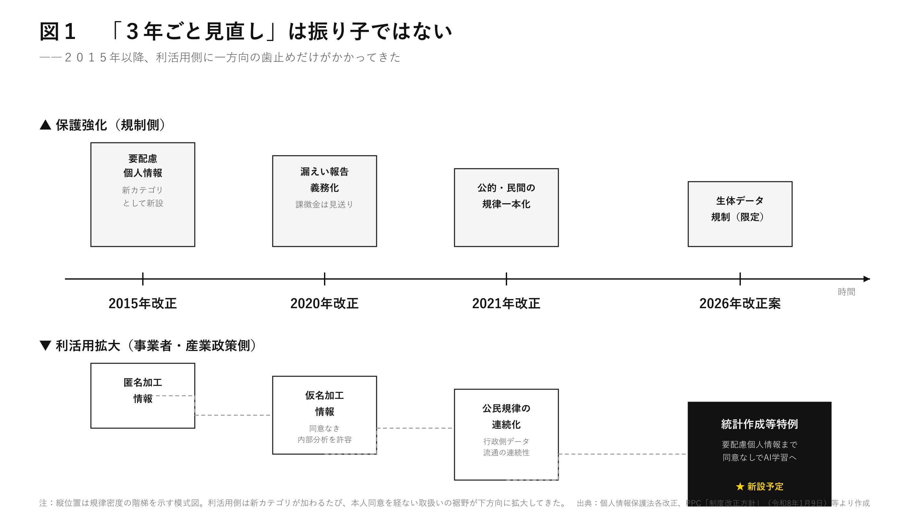
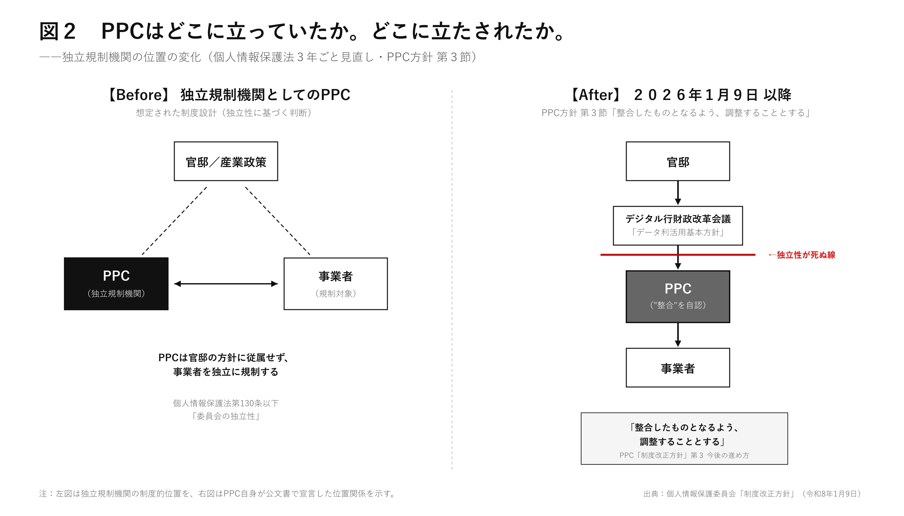

個人情報保護委員会が、自分の独立性を投げ捨てた日は、2026年1月9日だった。本文わずか4頁の「3年ごと見直しの制度改正方針」最終節に、PPCはこう書いている。デジタル行財政改革会議のデータ利活用基本方針に、個人情報保護法の改正は「整合したものとなるよう、調整することとする」。規制する側が、規制される側に整合する、と一行で書いた。日弁連も保守言論も、ここを見ていない。
３年ごと見直しは、振り子ではない
今回の改正案は、平成27年改正以降くり返されてきた定期改正サイクルの、3度目に当たる。毎回、保護強化と利活用拡大が抱き合わせで出てくる。2015年改正で要配慮個人情報という新カテゴリを設けつつ、匿名加工情報を導入した。2020年改正で漏えい報告を義務化しつつ、仮名加工情報を新設した。同意なき内部分析を許す装置である。2021年改正で公的部門と民間の規律を一本化し、行政側のデータ流通の連続性を高めた。そして2026年、要配慮個人情報そのものを同意なしでAI学習に流し込む「統計作成等特例」を、新設しようとしている。3年ごと見直しは、規制と利活用を交互に並べた振り子ではない。利活用側に一方向だけ歯止めをかけた、戻れない歯車である。

「対応関係を排斥した」モデルは、技術現実の半周後ろを走っている
PPC方針が引用する規制改革実施計画には、こう書かれている。「特定の個人との対応関係が排斥された一般的・汎用的な分析結果の獲得と利用のみを目的とした取扱い」。氏名を消した上で、AIの学習素材に投入し、出力されるのは集団的・統計的なモデルだから、個人の権利侵害は少ない。それが正当化の骨格である。この論理は2010年代前半までは通用した。属性の束による間接識別が商用化される前の話だ。日弁連が今年4月16日付意見書で挙げた具体例は、現在地を正確に映している。無香料ローションと、特定のサプリメントの組み合わせから、AIは妊娠の事実を推知する。男性で、ヘーゼル色の瞳で、タトゥーがある。この三項目の組み合わせから、AIは犯罪リスクをスコア化する。識別子は消えているのに、属性の束は本人を貫通する。「対応関係を排斥した」モデルは、技術現実の半周後ろを走っている。
本件の核心は、規律密度である
ところが本件の核心は、この実体ルールの是非ですらない。規律密度である。改正案は、要配慮個人情報の取扱例外、本人意思に反しない例外、公衆衛生例外を、いずれも法律本文では限定列挙していない。具体的範囲は委員会規則と運用ガイドラインに送られる。日弁連はこの点を、憲法41条と73条1号に抵触する、と明示した。国の最高機関である国会の立法権を、行政機関の規則制定権が侵食する構造である。
さらに重い問題は、その規則を制定するPPCが、自分の判断軸を放棄したことだ。冒頭で触れた、あの一節である。官邸直轄のデジタル行財政改革会議のデータ利活用基本方針に、PPC自身の改正案を整合させる、と書いた。独立規制機関の存在意義は、規制機関でない他の政府組織の方針と、独立に判断することにある。「整合したものとなるよう、調整する」と書いた瞬間、その独立性は法制度の上では生きていても、運用の上では死ぬ。日本は、独立規制機関が「ある」のではなく「あった」国に変わりつつある。

同じ日に、もう一つの法律が成立した
本稿を書いている本日、5月27日、国家情報会議設置法が国会で成立した。AIを活用した情報収集・分析機能を国家機構に組み込む、戦後の制度設計としては類を見ないハコモノである。審議過程ではプライバシー保護、人権、政治的中立性の懸念が次々と提起され、付帯決議が付された。だが本体の法文は、問題の存在を認識したまま、制度的な歯止めを欠いたまま、先にハコだけが建った。AIによる情報管理の利便性を、人間の価値より上位に置く。個人情報保護法改正案と、同じ構造である。同じ日に二つが並走しているのは、偶然ではない。
保守は、自分の足元を売っている
ここを論じるべきは、本来は保守言論であるはずだ。人格は計算可能な属性の総和ではない、というのは、エドマンド・バーク以来の保守の本籍である。中間団体や法の支配が、行政裁量の暴走に対する楯になる、という制度観もそうだ。だが2025年から2026年にかけて、産経新聞、正論、WiLL、Hanadaのいずれにも、本件への本格論評はほぼ確認できない。経済界の課徴金反対だけが見出しになり、要配慮個人情報の同意なき取扱いと、PPCの独立性放棄、そして国家情報会議設置法のハコ先行は、保守の主戦場では報じられていない。日弁連の領分と片づけた瞬間、保守は自分の足元を売っている。
やるべきことは三つに見えるが、本質は一つだ
やるべきことは三つに見えるが、本質は一つである。要配慮個人情報の例外規定を、法律本文で限定列挙すること。AI学習を目的とする取扱いに、別枠の差別効果検証義務を課すこと。PPCの独立性を、運用ガイドラインではなく法律本文の組織規定で担保し直すこと。最後の一つが、最も地味で、最も決定的である。規制機関が独立していない国で、人格をデータに溶かす権限を行政府に渡す。これは人権論の前に、統治構造の自殺である。経済財政運営の都合で、国会の手元から個人情報の規律密度が外されていく過程を、保守はもう少し、注視したほうがいい。それとも、人間を属性の束に還元する立法を、自分たちは黙認したのだ、とあとで誰かに説明するつもりだろうか。
主要参照資料
・個人情報保護委員会「個人情報保護法 いわゆる3年ごと見直しの制度改正方針」（令和8年1月9日、本文4頁）
・日本弁護士連合会「個人情報保護法いわゆる3年ごと見直しの改正法案についての意見書」（2026年4月16日）
・規制改革実施計画（令和7年6月13日閣議決定）
・「経済財政運営と改革の基本方針2025」
・「データ利活用制度の在り方に関する基本方針」（令和7年6月13日閣議決定）
・国家情報会議設置法（2026年5月27日成立、付帯決議付）